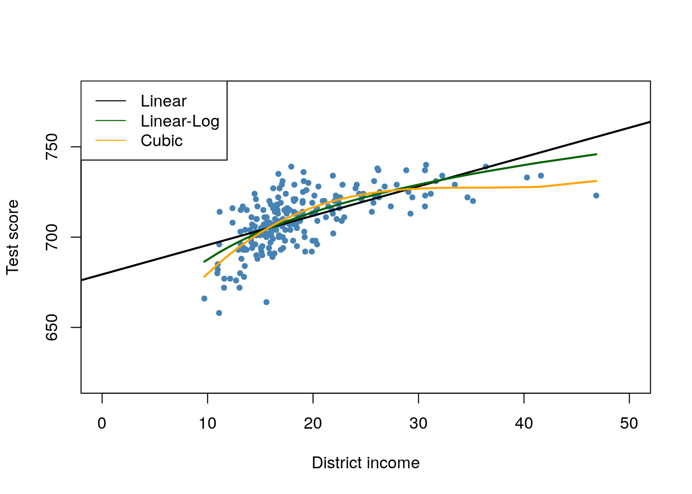

9.4 Example: Test Scores and Class Size
This section discusses internal and external validity of the results gained from analyzing the California test score data using multiple regression models.
External Validity of the Study
External validity of the California test score analysis means that its results can be generalized. Whether this is possible depends on the population and the setting. Following the book we conduct the same analysis using data for fourth graders in \(220\) public school districts in Massachusetts in 1998. Like CASchools, the data set MASchools is part of the AER package (Kleiber and Zeileis 2019). Use the help function (?MASchools) to get information on the definitions of all the variables contained.
We start by loading the data set and proceed by computing some summary statistics.
# attach the 'MASchools' dataset
data("MASchools")
summary(MASchools)
#> district municipality expreg expspecial
#> Length:220 Length:220 Min. :2905 Min. : 3832
#> Class :character Class :character 1st Qu.:4065 1st Qu.: 7442
#> Mode :character Mode :character Median :4488 Median : 8354
#> Mean :4605 Mean : 8901
#> 3rd Qu.:4972 3rd Qu.: 9722
#> Max. :8759 Max. :53569
#>
#> expbil expocc exptot scratio
#> Min. : 0 Min. : 0 Min. :3465 Min. : 2.300
#> 1st Qu.: 0 1st Qu.: 0 1st Qu.:4730 1st Qu.: 6.100
#> Median : 0 Median : 0 Median :5155 Median : 7.800
#> Mean : 3037 Mean : 1104 Mean :5370 Mean : 8.107
#> 3rd Qu.: 0 3rd Qu.: 0 3rd Qu.:5789 3rd Qu.: 9.800
#> Max. :295140 Max. :15088 Max. :9868 Max. :18.400
#> NA's :9
#> special lunch stratio income
#> Min. : 8.10 Min. : 0.40 Min. :11.40 Min. : 9.686
#> 1st Qu.:13.38 1st Qu.: 5.30 1st Qu.:15.80 1st Qu.:15.223
#> Median :15.45 Median :10.55 Median :17.10 Median :17.128
#> Mean :15.97 Mean :15.32 Mean :17.34 Mean :18.747
#> 3rd Qu.:17.93 3rd Qu.:20.02 3rd Qu.:19.02 3rd Qu.:20.376
#> Max. :34.30 Max. :76.20 Max. :27.00 Max. :46.855
#>
#> score4 score8 salary english
#> Min. :658.0 Min. :641.0 Min. :24.96 Min. : 0.0000
#> 1st Qu.:701.0 1st Qu.:685.0 1st Qu.:33.80 1st Qu.: 0.0000
#> Median :711.0 Median :698.0 Median :35.88 Median : 0.0000
#> Mean :709.8 Mean :698.4 Mean :35.99 Mean : 1.1177
#> 3rd Qu.:720.0 3rd Qu.:712.0 3rd Qu.:37.96 3rd Qu.: 0.8859
#> Max. :740.0 Max. :747.0 Max. :44.49 Max. :24.4939
#> NA's :40 NA's :25It is fairly easy to replicate key components of Table 9.1 of the book using R. To be consistent with variable names used in the CASchools data set, we do some formatting beforehand.
# Customized variables in MASchools
MASchools$score <- MASchools$score4
MASchools$STR <- MASchools$stratio
# Reproduce Table 9.1 of the book
vars <- c("score", "STR", "english", "lunch", "income")
cbind(CA_mean = sapply(CASchools[, vars], mean),
CA_sd = sapply(CASchools[, vars], sd),
MA_mean = sapply(MASchools[, vars], mean),
MA_sd = sapply(MASchools[, vars], sd))
#> CA_mean CA_sd MA_mean MA_sd
#> score 654.15655 19.053347 709.827273 15.126474
#> STR 19.64043 1.891812 17.344091 2.276666
#> english 15.76816 18.285927 1.117676 2.900940
#> lunch 44.70524 27.123381 15.315909 15.060068
#> income 15.31659 7.225890 18.746764 5.807637The summary statistics reveal that the average test score is higher for school districts in Massachusetts. The test used in Massachusetts is somewhat different from the one used in California (the Massachusetts test score also includes results for the school subject “Science”), therefore a direct comparison of test scores is not appropriate. We also see that, on average, classes are smaller in Massachusetts than in California and that the average district income, average percentage of English learners as well as the average share of students receiving subsidized lunch differ considerably from the averages computed for California. There are also notable differences in the observed dispersion of the variables.
Following the book we examine the relationship between district income and test scores in Massachusetts as we have done before in Chapter 8 for the California data and reproduce Figure 9.2 of the book.
# estimate linear model
Linear_model_MA <- lm(score ~ income, data = MASchools)
Linear_model_MA
#>
#> Call:
#> lm(formula = score ~ income, data = MASchools)
#>
#> Coefficients:
#> (Intercept) income
#> 679.387 1.624
# estimate linear-log model
Linearlog_model_MA <- lm(score ~ log(income), data = MASchools)
Linearlog_model_MA
#>
#> Call:
#> lm(formula = score ~ log(income), data = MASchools)
#>
#> Coefficients:
#> (Intercept) log(income)
#> 600.80 37.71
# estimate Cubic model
cubic_model_MA <- lm(score ~ I(income) + I(income^2) + I(income^3), data = MASchools)
cubic_model_MA
#>
#> Call:
#> lm(formula = score ~ I(income) + I(income^2) + I(income^3), data = MASchools)
#>
#> Coefficients:
#> (Intercept) I(income) I(income^2) I(income^3)
#> 600.398531 10.635382 -0.296887 0.002762# plot data
plot(MASchools$income, MASchools$score,
pch = 20,
col = "steelblue",
xlab = "District income",
ylab = "Test score",
xlim = c(0, 50),
ylim = c(620, 780))
# add estimated regression line for the linear model
abline(Linear_model_MA, lwd = 2)
# add estimated regression function for Linear-log model
order_id <- order(MASchools$income)
lines(MASchools$income[order_id],
fitted(Linearlog_model_MA)[order_id],
col = "darkgreen",
lwd = 2)
# add estimated cubic regression function
lines(x = MASchools$income[order_id],
y = fitted(cubic_model_MA)[order_id],
col = "orange",
lwd = 2)
# add a legend
legend("topleft",
legend = c("Linear", "Linear-Log", "Cubic"),
lty = 1,
col = c("Black", "darkgreen", "orange"))
The plot indicates that the cubic specification fits the data best. Interestingly, this is different from the CASchools data where the pattern of nonlinearity is better described by the linear-log specification.
We continue by estimating most of the model specifications used for analysis of the CASchools data set in Chapter 8 and use stargazer() (Hlavac 2018) to generate a tabular representation of the regression results.
# add 'HiEL' to 'MASchools'
MASchools$HiEL <- as.numeric(MASchools$english > median(MASchools$english))
# estimate the model specifications from Table 9.2 of the book
TestScore_MA_mod1 <- lm(score ~ STR, data = MASchools)
TestScore_MA_mod2 <- lm(score ~ STR + english + lunch + log(income),
data = MASchools)
TestScore_MA_mod3 <- lm(score ~ STR + english + lunch + income + I(income^2)
+ I(income^3), data = MASchools)
TestScore_MA_mod4 <- lm(score ~ STR + I(STR^2) + I(STR^3) + english + lunch + income
+ I(income^2) + I(income^3), data = MASchools)
TestScore_MA_mod5 <- lm(score ~ STR + I(income^2) + I(income^3) + HiEL:STR + lunch
+ income, data = MASchools)
TestScore_MA_mod6 <- lm(score ~ STR + I(income^2) + I(income^3) + HiEL + HiEL:STR + lunch
+ income, data = MASchools)
# gather robust standard errors
rob_se <- list(sqrt(diag(vcovHC(TestScore_MA_mod1, type = "HC1"))),
sqrt(diag(vcovHC(TestScore_MA_mod2, type = "HC1"))),
sqrt(diag(vcovHC(TestScore_MA_mod3, type = "HC1"))),
sqrt(diag(vcovHC(TestScore_MA_mod4, type = "HC1"))),
sqrt(diag(vcovHC(TestScore_MA_mod5, type = "HC1"))),
sqrt(diag(vcovHC(TestScore_MA_mod6, type = "HC1"))))
# generate a table with 'stargazer()'
library(stargazer)
stargazer(Linear_model_MA, TestScore_MA_mod2, TestScore_MA_mod3,
TestScore_MA_mod4, TestScore_MA_mod5, TestScore_MA_mod6,
title = "Regressions Using Massachusetts Test Score Data",
type = "latex",
digits = 3,
header = FALSE,
se = rob_se,
object.names = TRUE,
model.numbers = FALSE,
column.labels = c("(I)", "(II)", "(III)", "(IV)", "(V)", "(VI)"))| Dependent Variable: Score | ||||||
| score | ||||||
| (I) | (II) | (III) | (IV) | (V) | (VI) | |
| STR | -1.718*** | -0.689** | -0.641** | 12.426 | -1.018*** | -0.672** |
| (0.499) | (0.270) | (0.268) | (14.010) | (0.370) | (0.271) | |
| I(STR2) | -0.680 | |||||
| (0.737) | ||||||
| I(STR3) | 0.011 | |||||
| (0.013) | ||||||
| english | -0.411 | -0.437 | -0.434 | |||
| (0.306) | (0.303) | (0.300) | ||||
| HiEL | -12.561 | |||||
| (9.793) | ||||||
| lunch | -0.521*** | -0.582*** | -0.587*** | -0.709*** | -0.653*** | |
| (0.078) | (0.097) | (0.104) | (0.091) | (0.073) | ||
| log(income) | 16.529*** | |||||
| (3.146) | ||||||
| income | -3.067 | -3.382 | -3.867 | -3.218 | ||
| (2.353) | (2.491) | (2.488) | (2.306) | |||
| I(income2) | 0.164* | 0.174* | 0.184** | 0.165* | ||
| (0.085) | (0.089) | (0.090) | (0.085) | |||
| I(income3) | -0.002** | -0.002** | -0.002** | -0.002** | ||
| (0.001) | (0.001) | (0.001) | (0.001) | |||
| STR:HiEL | 0.799 | |||||
| (0.555) | ||||||
| Constant | 739.621*** | 682.432*** | 744.025*** | 665.496*** | 759.914*** | 747.364*** |
| (8.607) | (11.497) | (21.318) | (81.332) | (23.233) | (20.278) | |
| Observations | 220 | 220 | 220 | 220 | 220 | 220 |
| R2 | 0.067 | 0.676 | 0.685 | 0.687 | 0.686 | 0.681 |
| Adjusted R2 | 0.063 | 0.670 | 0.676 | 0.675 | 0.675 | 0.674 |
| Residual Std. Error | 14.646 (df = 218) | 8.686 (df = 215) | 8.607 (df = 213) | 8.626 (df = 211) | 8.621 (df = 212) | 8.637 (df = 214) |
| F Statistic | 15.616*** (df = 1; 218) | 112.284*** (df = 4; 215) | 77.232*** (df = 6; 213) | 57.803*** (df = 8; 211) | 66.023*** (df = 7; 212) | 91.560*** (df = 5; 214) |
| Note: | *p<0.1; **p<0.05; ***p<0.01 | |||||
Table 9.1: Regressions Using Massachusetts Test Score Data
Next we reproduce the \(F\)-statistics and \(p\)-values for testing exclusion of groups of variables.
# F-test model (3)
linearHypothesis(TestScore_MA_mod3,
c("I(income^2)=0", "I(income^3)=0"),
vcov. = vcovHC, type = "HC1")
#> Linear hypothesis test
#>
#> Hypothesis:
#> I(income^2) = 0
#> I(income^3) = 0
#>
#> Model 1: restricted model
#> Model 2: score ~ STR + english + lunch + income + I(income^2) + I(income^3)
#>
#> Note: Coefficient covariance matrix supplied.
#>
#> Res.Df Df F Pr(>F)
#> 1 215
#> 2 213 2 6.227 0.002354 **
#> ---
#> Signif. codes: 0 '***' 0.001 '**' 0.01 '*' 0.05 '.' 0.1 ' ' 1
# F-tests model (4)
linearHypothesis(TestScore_MA_mod4,
c("STR=0", "I(STR^2)=0", "I(STR^3)=0"),
vcov. = vcovHC, type = "HC1")
#> Linear hypothesis test
#>
#> Hypothesis:
#> STR = 0
#> I(STR^2) = 0
#> I(STR^3) = 0
#>
#> Model 1: restricted model
#> Model 2: score ~ STR + I(STR^2) + I(STR^3) + english + lunch + income +
#> I(income^2) + I(income^3)
#>
#> Note: Coefficient covariance matrix supplied.
#>
#> Res.Df Df F Pr(>F)
#> 1 214
#> 2 211 3 2.3364 0.07478 .
#> ---
#> Signif. codes: 0 '***' 0.001 '**' 0.01 '*' 0.05 '.' 0.1 ' ' 1
linearHypothesis(TestScore_MA_mod4,
c("I(STR^2)=0", "I(STR^3)=0"),
vcov. = vcovHC, type = "HC1")
#> Linear hypothesis test
#>
#> Hypothesis:
#> I(STR^2) = 0
#> I(STR^3) = 0
#>
#> Model 1: restricted model
#> Model 2: score ~ STR + I(STR^2) + I(STR^3) + english + lunch + income +
#> I(income^2) + I(income^3)
#>
#> Note: Coefficient covariance matrix supplied.
#>
#> Res.Df Df F Pr(>F)
#> 1 213
#> 2 211 2 0.3396 0.7124
linearHypothesis(TestScore_MA_mod4,
c("I(income^2)=0", "I(income^3)=0"),
vcov. = vcovHC, type = "HC1")
#> Linear hypothesis test
#>
#> Hypothesis:
#> I(income^2) = 0
#> I(income^3) = 0
#>
#> Model 1: restricted model
#> Model 2: score ~ STR + I(STR^2) + I(STR^3) + english + lunch + income +
#> I(income^2) + I(income^3)
#>
#> Note: Coefficient covariance matrix supplied.
#>
#> Res.Df Df F Pr(>F)
#> 1 213
#> 2 211 2 5.7043 0.003866 **
#> ---
#> Signif. codes: 0 '***' 0.001 '**' 0.01 '*' 0.05 '.' 0.1 ' ' 1
# F-tests model (5)
linearHypothesis(TestScore_MA_mod5,
c("STR=0", "STR:HiEL=0"),
vcov. = vcovHC, type = "HC1")
#> Linear hypothesis test
#>
#> Hypothesis:
#> STR = 0
#> STR:HiEL = 0
#>
#> Model 1: restricted model
#> Model 2: score ~ STR + HiEL + HiEL:STR + lunch + income + I(income^2) +
#> I(income^3)
#>
#> Note: Coefficient covariance matrix supplied.
#>
#> Res.Df Df F Pr(>F)
#> 1 214
#> 2 212 2 3.7663 0.0247 *
#> ---
#> Signif. codes: 0 '***' 0.001 '**' 0.01 '*' 0.05 '.' 0.1 ' ' 1
linearHypothesis(TestScore_MA_mod5,
c("I(income^2)=0", "I(income^3)=0"),
vcov. = vcovHC, type = "HC1")
#> Linear hypothesis test
#>
#> Hypothesis:
#> I(income^2) = 0
#> I(income^3) = 0
#>
#> Model 1: restricted model
#> Model 2: score ~ STR + HiEL + HiEL:STR + lunch + income + I(income^2) +
#> I(income^3)
#>
#> Note: Coefficient covariance matrix supplied.
#>
#> Res.Df Df F Pr(>F)
#> 1 214
#> 2 212 2 3.2201 0.04191 *
#> ---
#> Signif. codes: 0 '***' 0.001 '**' 0.01 '*' 0.05 '.' 0.1 ' ' 1
linearHypothesis(TestScore_MA_mod5,
c("HiEL=0", "STR:HiEL=0"),
vcov. = vcovHC, type = "HC1")
#> Linear hypothesis test
#>
#> Hypothesis:
#> HiEL = 0
#> STR:HiEL = 0
#>
#> Model 1: restricted model
#> Model 2: score ~ STR + HiEL + HiEL:STR + lunch + income + I(income^2) +
#> I(income^3)
#>
#> Note: Coefficient covariance matrix supplied.
#>
#> Res.Df Df F Pr(>F)
#> 1 214
#> 2 212 2 1.4674 0.2328
# F-test Model (6)
linearHypothesis(TestScore_MA_mod6,
c("I(income^2)=0", "I(income^3)=0"),
vcov. = vcovHC, type = "HC1")
#> Linear hypothesis test
#>
#> Hypothesis:
#> I(income^2) = 0
#> I(income^3) = 0
#>
#> Model 1: restricted model
#> Model 2: score ~ STR + lunch + income + I(income^2) + I(income^3)
#>
#> Note: Coefficient covariance matrix supplied.
#>
#> Res.Df Df F Pr(>F)
#> 1 216
#> 2 214 2 4.2776 0.01508 *
#> ---
#> Signif. codes: 0 '***' 0.001 '**' 0.01 '*' 0.05 '.' 0.1 ' ' 1We see that, in terms of \(\bar{R}^2\), specification (3) which uses a cubic to model the relationship between district income and test scores indeed performs better than the linear-log specification (2). Using different \(F\)-tests on models (4) and (5), we cannot reject the hypothesis that there is no nonlinear relationship between student teacher ratio and test score and also that the share of English learners has an influence on the relationship of interest. Furthermore, regression (6) shows that the percentage of English learners can be omitted as a regressor. Because of the model specifications made in (4) to (6) do not lead to substantially different results than those of regression (3), we choose model (3) as the most suitable specification.
In comparison to the California data, we observe the following results:
Controlling for the students’ background characteristics in model specification (2) reduces the coefficient of interest (student-teacher ratio) by roughly \(60\%\). The estimated coefficients are close to each other.
The coefficient on student-teacher ratio is always significantly different from zero at the level of \(1\%\) for both data sets. This holds for all considered model specifications in both studies.
In both studies the share of English learners in a school district is of little importance for the estimated impact of a change in the student-teacher ratio on test score.
The biggest difference is that, in contrast to the California results, we do not find evidence of a nonlinear relationship between test scores and the student teacher ratio for the Massachusetts data since the corresponding \(F\)-tests for model (4) do not reject.
As pointed out in the book, the test scores for California and Massachusetts have different units because the underlying tests are different. Thus the estimated coefficients on the student-teacher ratio in both regressions cannot be compared before standardizing test scores to the same units as \[\frac{Testscore - \overline{TestScore}}{\sigma_{TestScore}}\] for all observations in both data sets and running the regressions of interest using the standardized data again. One can show that the coefficient on student-teacher ratio in the regression using standardized test scores is the coefficient of the original regression divided by the standard deviation of test scores.
For model (3) of the Massachusetts data, the estimated coefficient on the student-teacher ratio is \(-0.64\). A reduction of the student-teacher ratio by two students is predicted to increase test scores by \(-2 \cdot (-0.64) = 1.28\) points. Thus we can compute the effect of a reduction of student-teacher ratio by two students on the standardized test scores as follows:
For Massachusetts the predicted increase of test scores due to a reduction of the student-teacher ratio by two students is \(0.085\) standard deviations of the distribution of the observed distribution of test scores.
Using the linear specification (2) for California, the estimated coefficient on the student-teacher ratio is \(-0.73\) so the predicted increase of test scores induced by a reduction of the student-teacher ratio by two students is \(-0.73 \cdot (-2) = 1.46\). We use R to compute the predicted change in standard deviation units:
This shows that the the predicted increase of test scores due to a reduction of the student-teacher ratio by two students is \(0.077\) standard deviation of the observed distribution of test scores for the California data.
In terms of standardized test scores, the predicted change is essentially the same for school districts in California and Massachusetts.
Altogether, the results support external validity of the inferences made using data on Californian elementary school districts — at least for Massachusetts.
Internal Validity of the Study
External validity of the study does not ensure their internal validity. Although the chosen model specification improves upon a simple linear regression model, internal validity may still be violated due to some of the threats listed in Key Concept 9.7. These threats are:
omitted variable bias
misspecification of functional form
errors in variables
sample selection issues
simultaneous causality
heteroskedasticity
correlation of errors across observations
Consult the book for an in-depth discussion of these threats in view of both test score studies.
Summary
We have found that there is a small but statistically significant effect of the student-teacher ratio on test scores. However, it remains unclear if we have indeed estimated the causal effect of interest since — despite that our approach including control variables, taking into account nonlinearities in the population regression function and statistical inference using robust standard errors — the results might still be biased for example if there are omitted factors which we have not considered. Thus internal validity of the study remains questionable. As we have concluded from comparison with the analysis of the Massachusetts data set, this result may be externally valid.
The following chapters address techniques that can be remedies to all the threats to internal validity listed in Key Concept 9.7 if multiple regression alone is insufficient. This includes regression using panel data and approaches that employ instrumental variables.
References
Hlavac, Marek. 2018. stargazer: Well-Formatted Regression and Summary Statistics Tables (version 5.2.2). https://CRAN.R-project.org/package=stargazer.
Kleiber, Christian, and Achim Zeileis. 2019. AER: Applied Econometrics with R (version 1.2-8). https://CRAN.R-project.org/package=AER.